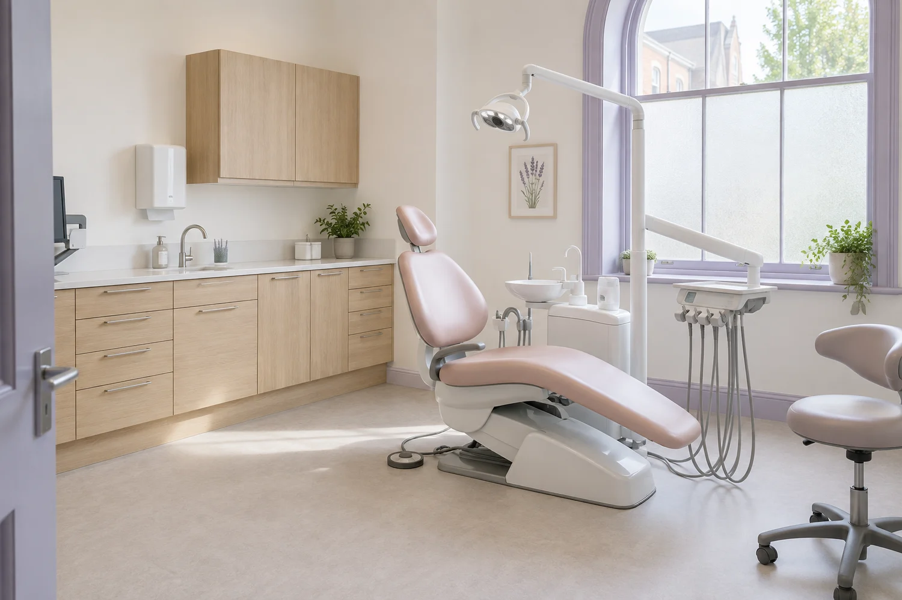

3 GENERAL DENTIST ROLES
Assessment & discussion.
Explain the examination, findings and possible next steps. Discuss options before any agreed treatment.
A neighbourhood practice
Willowgate is a fictional twelve-person private general dental practice for Cambridge adults and families. The practice is imagined around everyday visits and clear explanations.

One place, three rooms
The practice has three consultation rooms, a ground-floor reception and one room on the ground floor. The remaining rooms are reached by stairs. Practical room requests are discussed before a real visit would be arranged.
The setting is modest: oak joinery, daylight and quieter colours. What matters is knowing where to go, having room for questions and understanding the visit before it begins.
The people in the process
3 GENERAL DENTIST ROLES
Explain the examination, findings and possible next steps. Discuss options before any agreed treatment.
3 NURSE + 2 HYGIENE ROLES
Support the consultation setting and give hygiene visits their own time and attention.
3 COORDINATORS + 1 MANAGER
Help people understand arrival, the available visit types and questions about the setting.
These are fictional team roles, not profiles of registered professionals. No real staff member, qualification or specialist credential is represented.
Willowgate Dental is a fictional enterprise created for the Fieldwork Digital Showcase. The company, team roles, premises and photographs are original concept content. It is not an actual client engagement or an operating dental practice.
The site demonstrates a complete patient-information website and administrative enquiry preparation. It provides no diagnosis, treatment advice, outcome promise or professional registration claim. All people in the images are generated fictional subjects, not patients or staff.
The planner holds preferences only on the current page. Reloading resets them, apart from an explicit visit or access preference in the page URL. No information is stored or sent. No booking, account, payment, email or clinical records system is connected.